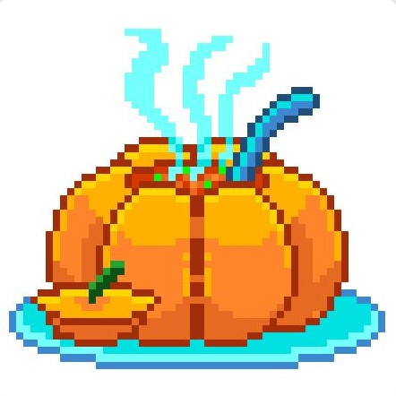
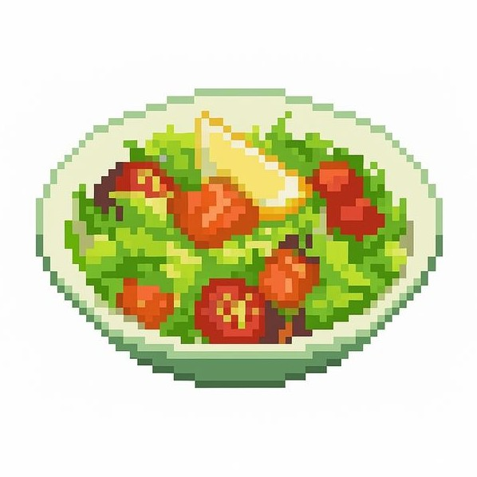
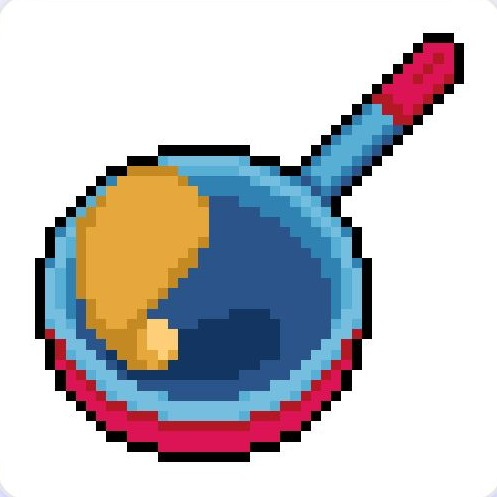
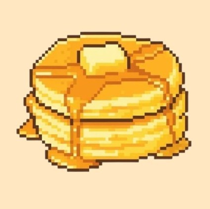

Sopa de Abóbora
A sopa de abóbora é um prato quente e reconfortante. Feita com ingredientes frescos da fazenda, é perfeita para recuperar energia após um longo dia de trabalho.

A sopa de abóbora é um prato quente e reconfortante. Feita com ingredientes frescos da fazenda, é perfeita para recuperar energia após um longo dia de trabalho.

A salada de frutas é uma receita refrescante feita com diferentes frutas cultivadas na fazenda. Colorida e nutritiva, é uma ótima opção para restaurar energia de forma leve.

A omelete é uma receita simples preparada com ovos frescos da fazenda. Nutritiva e rápida de fazer, é perfeita para manter o fazendeiro cheio de energia durante as atividades do dia.

A panqueca é um café da manhã clássico na fazenda. Feita com ingredientes simples, ela é um prato saboroso que fornece bastante energia para começar o dia.